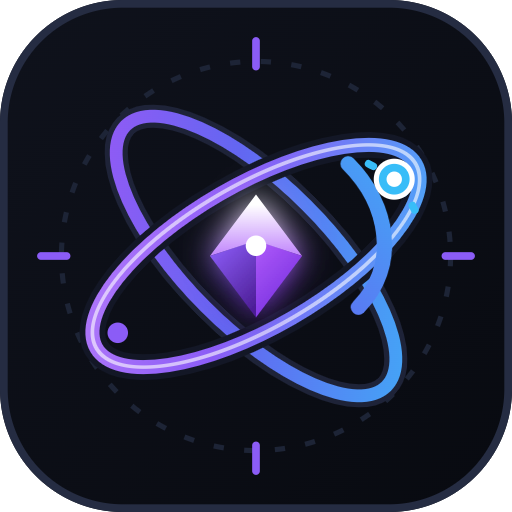
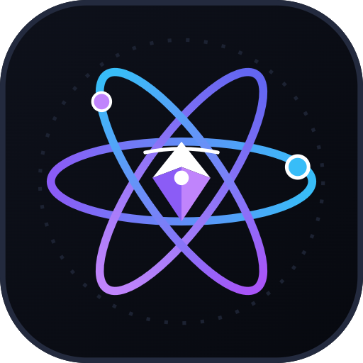
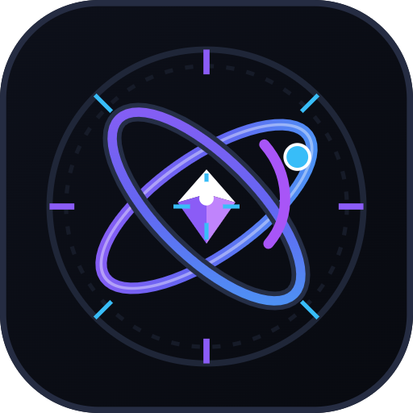
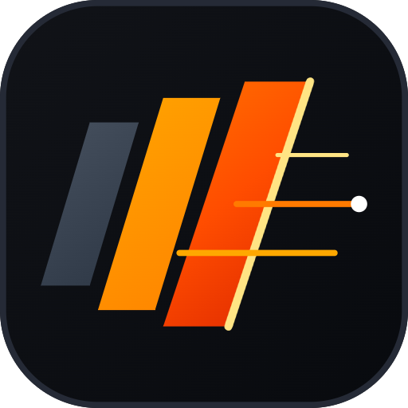

High-performance vector SVGs and 512px transparent PNGs generated on disk. Refining the beloved gyroscopic Valence mark, and creating 3 radical, non-square designs for Runner.

True 3D ring weaving where the orbitals realistically pass over/under each other with depth drop-shadows. Features a faceted crystalline octahedron diamond core and satellite momentum arc.

Three interlocking orthogonal orbital rings forming an impossible gyroscopic cage with dual counter-rotating satellite nodes and a suspended diamond pulsator.

Housed inside a fine circular astrolabe dial with calibrated degree ticks, cardinal crosshairs, and the twin woven orbitals bridging astronomical navigation with quantum compute.
Deconstructed architectural monogram composed of a dark titanium spine, aerodynamic acceleration loop, and a forward-thrusting vector kick blade with specular laser edge.

Reclaiming the orange heritage into a high-octane supersonic slipstream. Three forward-canted aerodynamic blades slice through air, creating a high-speed sonic wake and forward command vector.
Directly aligns with DESIGN.md's Nordic Minimal HUD. Circular telemetry compass with precision cardinal ticks, housing a dual-tier forward interceptor chevron (>>) locked onto target.